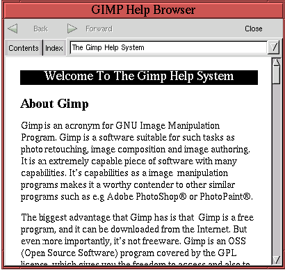

Next: 1.10 Common Problems and
Up: 1. GIMP Basics
Previous: 1.8 Zoom and New
1.9 The Help System
The GIMP has an online help browser. The browser can be displayed
with Toolbox:Help or by pressing the F1 function
key while the mouse cursor is in any GIMP window.
Figure 1.19
Figure 1.19:
The Help System Browser
|  |
illustrates the help browser window. Pressing the F1 key when
the mouse cursor is over a specific GIMP tool brings up the help page
relevant to that tool. The Contents and Index tabs provide access to
the general contents of the help database.
Next: 1.10 Common Problems and
Up: 1. GIMP Basics
Previous: 1.8 Zoom and New
©2000 Gimp-Savvy.com